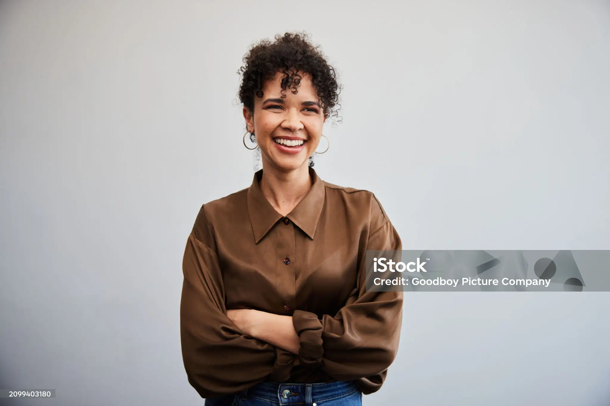
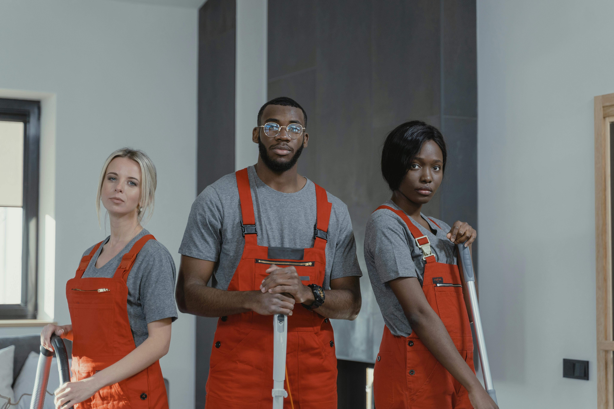
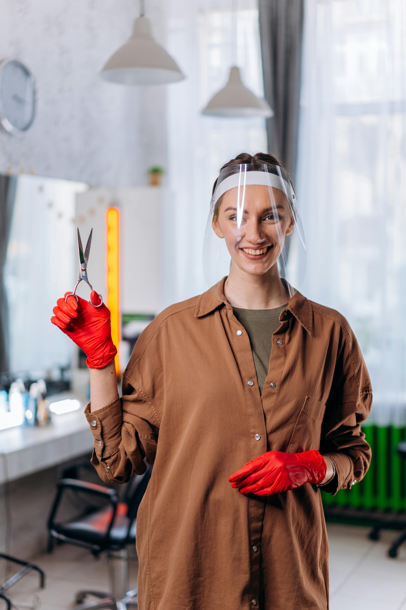

votre partenaire de confiance pour un environnement sain
notre histoire,votre objectif,une proprete batie en equipe

Fondée en 2000, ALIKACLEAN COMPANY a été créée avec la volonté de fournir des services de nettoyage de qualité supérieure à nos clients. Depuis nos débuts, nous avons évolué pour devenir un acteur majeur dans le secteur, en offrant des services à la fois professionnels et respectueux de l'environnement. Découvrez notre parcours et comment nos avons réussi à fidéliser nos clients avec des solutions innovantes et personnalisées.
Notre mission est simple: vous offrir un environnement propre, sain et agréable. Que ce soit pour votre maison, votre bureau ou votre entreprise, nous nous engageons à fournir des services de nettoyage qui répondent à vos besoins spécifiques. Notre équipe s'efforce de respecter les plus hauts standards de l'environnement.


Nous envisageons un avenir ou chaque espace sera non seulement propre mais aussi respectueux de l'environnement. En intégrant des pratiques durables dans nos processus, nous visons à réduire notre empreinte écologique tout en fournissant Des services qui aident nos clients à vivre et travailler dans des environnements plus sains.
pour visualiser au mieux notre entreprise nous vous
proposons ces trois methodes de communication